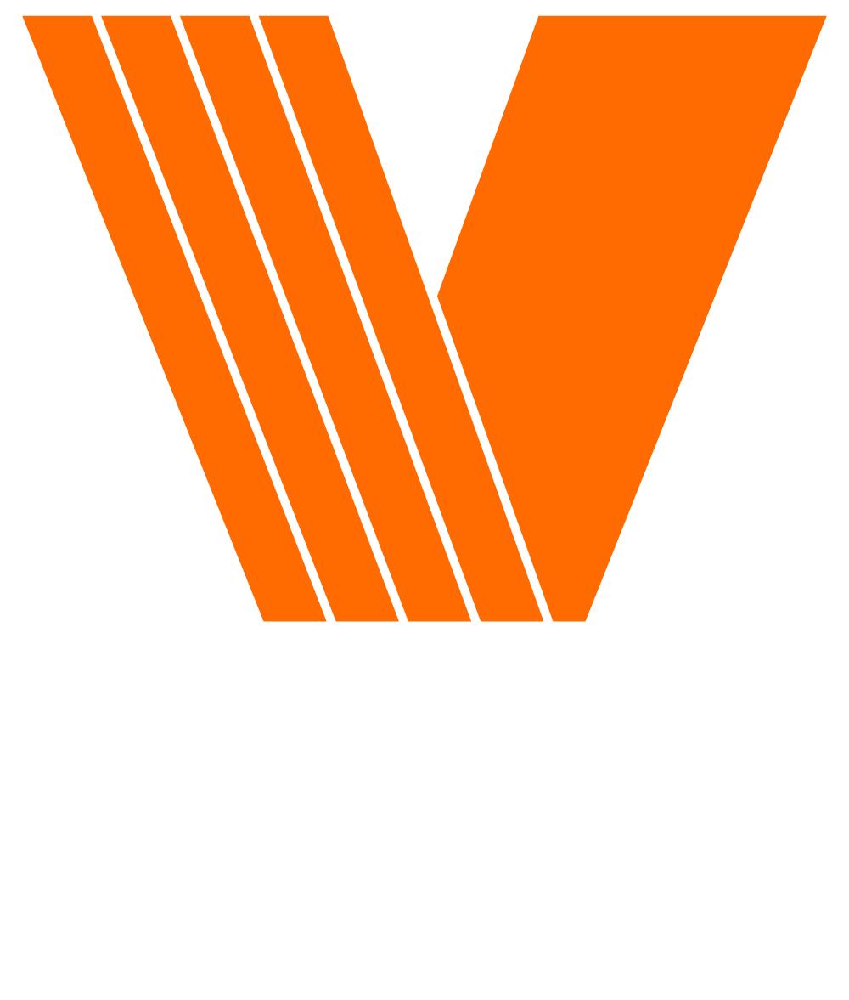

VCL Takapuna Live Cams is a 24/7 automated live streaming system broadcasting RTSP camera feeds of Takapuna Beach and Lake Pupuke to YouTube Live. The system is designed for unattended operation with automatic failover at multiple levels — from individual camera recovery through to a relay-hosted fallback slate if the stream PC loses power entirely.
OBS does not stream directly to YouTube. It pushes to a Vultr RTMP relay server in Sydney, which restreams to YouTube. This adds a reliability buffer — if the local network blips, the relay continues serving YouTube while OBS reconnects. If OBS goes down entirely, the relay switches to a BRB slate automatically.
| Event | Response | Where handled |
|---|---|---|
| Single camera drops | Source restarted after 15s, BRB scene shown | OBS Lua script |
| Camera stuck in OPENING state | Treated as failure after 30s | OBS Lua script |
| All cameras recover | 60s stability check, then switch back to live | OBS Lua script |
| OBS launched after power loss | Safe mode prompt bypassed automatically | start-obs.ps1 |
| OBS stops streaming | Stream restarted automatically | obs-watchdog.ps1 |
| VPN tunnel drops | Email alert sent | vpn-watchdog.ps1 |
| OBS PC loses power / network | BRB slate loops to YouTube from Vultr | stream-monitor.sh |
The Lua script runs inside OBS and is the primary camera health monitor. It checks both RTSP sources every 2 seconds and manages scene switching automatically.
| Behaviour | Detail |
|---|---|
| Check interval | Every 2000ms |
| Healthy states | PLAYING only — OPENING/BUFFERING tolerated for up to 30s |
| On camera failure | Immediately switches to BRB scene |
| Source restart | Attempts restart after 15s of non-playing state |
| Recovery delay | Waits 60s of stable PLAYING before switching back to main |
| Post-switch grace | 15s grace period after switching to main (prevents false BRB on camera reinitialisation) |
| Return overlay | BRBSlide source shown for 60s on return from BRB, covering cameras during reinitialisation |
| Reboot protection | Sources stuck in OPENING/BUFFERING for >30s treated as failed |
| Email alerts | On camera drop and recovery via send-alert.ps1 |
Scenes required in OBS: Lake & Beach (main) and BRB. Source names must match: BeachCam and LakeCam.
Lake & Beach scene, add a source → Scene → BRB, rename it BRBSlide, place it at the top of the source list, and set it hidden (eye off). The Lua script shows and hides it automatically on camera recovery.Two Nginx containers run locally and are captured as browser sources in OBS.
4K canvas (3840×2160) serving html/index.html. Fetches current weather and 9-hour wind forecast from OpenWeatherMap every 10 minutes. Rotates Wind / Feels Like / Humidity every 5 seconds. Shows Victor Contractors ad bug every 30s for 15s. Overlays Takapuna Beach (SSE) and Lake Pupuke (WNW) camera labels.
Serves brb/index.html. Animated wave icon, pulsing dots, live clock, and subtitle "Live Cams will return shortly." Shown when OBS switches to BRB scene due to camera failure.
Three PowerShell scripts run as Windows services via WinSW, independently of OBS. They start automatically on boot.
| Script | Service name | What it does |
|---|---|---|
obs-watchdog.ps1 |
BeachCam-OBSWatchdog | Connects to OBS via WebSocket v5 (ws://localhost:4455). Polls stream status and calls StartStream if streaming has stopped. Implements the full OBS WebSocket v5 handshake manually. |
vpn-watchdog.ps1 |
BeachCam-VPNWatchdog | Pings 10.0.1.1 to verify the OpenVPN tunnel is active. Sends an email alert if the tunnel drops. |
send-alert.ps1 |
Called by other scripts | Sends SMTP email via smtp.safermail.co.nz:25. Throttles each alert type to once per 10 minutes using lock files in %TEMP%. |
start-obs.ps1 |
Windows startup shortcut | Runs before OBS via the OBS Start desktop shortcut. (1) Deletes .sentinel files — OBS creates these at startup and removes on clean exit; leftover files trigger the safe mode prompt after power loss. (2) Checks each scene collection JSON for the Lua script entry and restores from OBS's .bak file if missing — power loss can truncate the JSON mid-write, dropping the script. (3) Launches OBS with the correct working directory. Logs to C:\BeachCam\logs\start-obs.log. |
| Property | Value |
|---|---|
| Provider | Vultr Cloud Compute, Sydney |
| OS | Ubuntu 24.04 LTS |
| Spec | 2 vCPU / 4GB RAM / 3TB transfer |
| Server IP | 149.28.163.222 |
| OBS machine IP | 161.29.196.211 — UFW locks ports 1935 & 8080 to this IP only |
Runs in Docker. Accepts the RTMP stream from OBS on port 1935 and uses an exec directive to pipe it to YouTube via FFmpeg automatically when OBS publishes.
| Port | Purpose |
|---|---|
| 1935 | RTMP ingest (OBS → SRS) |
| 1985 | SRS HTTP API — used by stream-monitor.sh to detect if OBS is live |
| 8080 | SRS HTTP stats dashboard |
Config location on server: /usr/local/srs/conf/docker.conf
YouTube stream key lives in this file inside the exec directive and also in stream-monitor.sh. Both must be updated together when rotating the key.
Bash script running as a systemd service (/etc/systemd/system/stream-monitor.service). Polls the SRS HTTP API every 5 seconds. If OBS is no longer publishing, it starts FFmpeg looping /opt/fallback/slate.mp4 directly to YouTube. When OBS reconnects, it kills the slate process and the live feed resumes.
docker-compose up -d
Start-Service BeachCam-OBSWatchdog Start-Service BeachCam-VPNWatchdog
Use the OBS Start desktop shortcut (runs scripts/start-obs.ps1). This clears safe mode triggers then launches OBS. The Lua script loads automatically and OBS begins streaming.
docker start srs systemctl start stream-monitor
systemctl stop stream-monitor
docker stop srs
pkill -f "slate.mp4" # if slate is still running
Stop-Service BeachCam-OBSWatchdog Stop-Service BeachCam-VPNWatchdog docker-compose down
docker-compose up -d # start docker-compose down # stop docker-compose ps # status docker logs weather-overlay # overlay logs
Get-Service "BeachCam-*" Start-Service BeachCam-OBSWatchdog Stop-Service BeachCam-OBSWatchdog Start-Service BeachCam-VPNWatchdog Stop-Service BeachCam-VPNWatchdog Restart-Service BeachCam-OBSWatchdog Restart-Service BeachCam-VPNWatchdog
Load or reload via OBS → Tools → Scripts. Remove and re-add scripts/scene-switcher.lua to apply updates.
docker start srs
docker stop srs
docker restart srs # apply config changes
docker logs -f srs
systemctl start stream-monitor systemctl stop stream-monitor systemctl restart stream-monitor systemctl status stream-monitor
| What | Command / Location |
|---|---|
| OBS watchdog log | Get-Content "C:\BeachCam\logs\obs-watchdog.log" -Wait |
| VPN watchdog log | Get-Content "C:\BeachCam\logs\vpn-watchdog.log" -Wait |
| Email alert log | C:\BeachCam\logs\alerts.log |
| OBS script output | OBS → Help → Log Files, or Tools → Scripts panel |
| OBS startup log | C:\BeachCam\logs\start-obs.log — confirms safe mode bypass on each launch |
| Overlay health | Open http://localhost:8080 and http://localhost:8081 in browser |
| What | Command |
|---|---|
| Stream monitor log | journalctl -u stream-monitor -f |
| SRS container log | docker logs -f srs |
| Check if OBS is live | curl http://127.0.0.1:1985/api/v1/streams/ |
| Check slate is running | pgrep -f slate.mp4 |
| Constant | Default | Purpose |
|---|---|---|
MAIN_SCENE | Lake & Beach | Scene name for normal streaming |
BRB_SCENE | BRB | Scene name for fallback |
CHECK_MS | 2000 | Health check interval (ms) |
RECOVERY_DELAY | 60 | Seconds cameras must be stable before switching back |
RESTART_AFTER_S | 15 | Seconds before attempting a source restart |
POST_SWITCH_GRACE_S | 15 | Grace period after switching to main scene |
OPENING_TIMEOUT_S | 30 | Max time in OPENING/BUFFERING before treated as failed |
RETURN_OVERLAY_S | 60 | Seconds the BRBSlide overlay is shown after switching back to main scene |
RETURN_OVERLAY_SOURCE | BRBSlide | Name of the overlay source in the Lake & Beach scene |
| Setting | Value |
|---|---|
| Service | Custom RTMP |
| Server | rtmp://149.28.163.222/live |
| Stream Key | stream |
| Resolution | 2560×1440 |
| Video Bitrate | 12000 Kbps |
| Encoder | NVENC H.264 |
| Keyframe Interval | 2 seconds |
| Setting | Value |
|---|---|
| SMTP server | smtp.safermail.co.nz:25 |
| From | ups@victorcontractors.co.nz |
| To | josh@roomone.live, nathan@victorcontractors.co.nz |
| Throttle | 10 minutes per alert type |
| Symptom | Likely cause | Action |
|---|---|---|
| Cameras show black on reboot, no BRB | Source stuck in OPENING state | Lua script detects after 30s and triggers BRB automatically. If persistent, restart RTSP sources manually in OBS. |
| BRB triggers briefly after switching back to main | Cameras reinitialising after scene switch | Handled by 15s post-switch grace period. Verify "Restart playback when source becomes active" is unchecked on both sources. |
| Stream drops but OBS shows streaming | RTMP connection to Vultr lost | Check VPN tunnel. obs-watchdog.ps1 will auto-restart the stream. Check obs-watchdog.log. |
| YouTube shows offline / Vultr slate not playing | SRS container or stream-monitor stopped | docker start srs && systemctl start stream-monitor |
| Weather overlay not showing | Docker container stopped or API issue | Run docker-compose ps and docker logs weather-overlay. Check http://localhost:8080. |
| No email alerts being received | Lock files throttling / SMTP issue | Check C:\BeachCam\logs\alerts.log. Clear lock files at %TEMP%\beachcam-alert-*.lock to reset throttle. |
| Rotating the YouTube stream key | Key exists in two places on Vultr | Update /usr/local/srs/conf/docker.conf (exec directive) and /opt/stream-monitor.sh, then:docker restart srs && systemctl restart stream-monitor |
| OBS prompts for safe mode on boot | OBS was previously force-killed or lost power | Use the OBS Start shortcut (not the OBS desktop icon directly). If already launched, close OBS and reopen via the shortcut. Check C:\BeachCam\logs\start-obs.log to confirm the script ran. |
| Lua script missing from OBS after power loss | Scene collection JSON truncated mid-write by power loss | Handled automatically by start-obs.ps1 — it restores the scene collection from OBS's .bak file before launch. Check start-obs.log for a "Restored St_Peters.json from .bak" entry to confirm. If the .bak is also missing the script, re-add it manually via Tools → Scripts and exit OBS cleanly to save. |